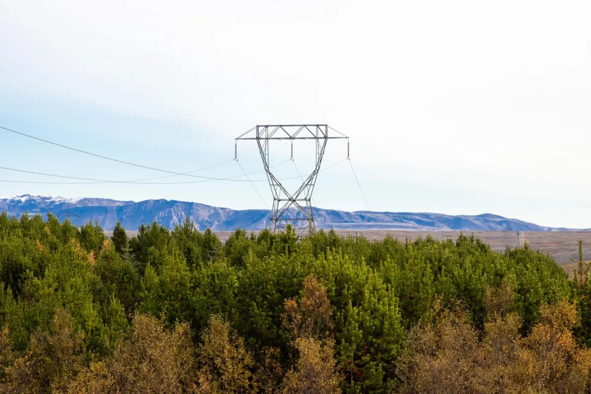

Stefna
Orkuvirki leggur áherslu á fagmennsku, áreiðanleika og samfélagslega ábyrgð í allri starfsemi sinni. Fyrirtækið stefnir að því að vera traustur samstarfsaðili, fyrirmyndar vinnustaður og virkur þátttakandi í sjálfbærri þróun. Í því felst skýr skuldbinding til að tryggja gæði, vernda umhverfið, stuðla að öryggi, standa vörð um jafnrétti og hlúa að mannauðinum.
Stefnan byggir á virku stjórnkerfi, sem vottað er samkvæmt ISO 9001:2015, ISO 14001:2015, ISO 45001:2018 og ÍST 85:2012, og er undirstaða alls skipulags og ákvarðanatöku hjá Orkuvirki. Fyrirtækið skuldbindur sig til að starfa í samræmi við kröfur staðlanna og þau lög og reglur sem um starfsemina gilda og stuðla að stöðugum umbótum í starfsemi sinni.
- 1
Gæði og fagmennska
Orkuvirki vinnur markvisst að því að:
- Uppfylla og fara fram úr væntingum viðskiptavina með hagkvæmum og vönduðum tæknilausnum.
- Tryggja stöðugar umbætur í þjónustu, verklagi og innra skipulagi.
- Starfa samkvæmt virku ISO 9001:2015 gæðastjórnunarkerfi sem byggist á stöðugum umbótum.
- 2
Umhverfi og sjálfbærni
Orkuvirki hefur umhverfisvernd að leiðarljósi í allri sinni starfsemi og skuldbindur sig til að:
- Draga úr umhverfisáhrifum með hagkvæmri nýtingu auðlinda, endurnýtingu og ábyrgri förgun úrgangs og spilliefna.
- Taka mið af náttúruvernd og lífríki við alla hönnun og framkvæmd verkefna.
- Starfa í samræmi við lög og reglur og viðhalda vottun samkvæmt ISO 14001:2015 með áherslu á stöðugar umbætur.
- 3
Öryggi, heilsa og vinnuvernd
Orkuvirki leggur áherslu á öryggi og vellíðan allra sem starfa á vegum fyrirtækisins. Skuldbindingin felur í sér að:
- Tryggja öruggt og heilsusamlegt vinnuumhverfi þar sem slysa- og heilsufarsáhætta er lágmörkuð.
- Koma í veg fyrir einelti, áreitni og ofbeldi með skýrum viðbragðsferlum.
- Tryggja samráð við öryggistrúnaðarmenn við rýni og umbætur á sviði öryggismála.
- Veita fræðslu og þjálfun sem styður við öryggismenningu og ábyrgð starfsmanna.
- Fylgja lögum og kröfum viðskiptavina og viðhalda vottun samkvæmt ISO 45001:2018.
- 4
Mannauður og starfsumhverfi
Orkuvirki lítur á mannauðinn sem einn mikilvægasta þátt árangurs og skuldbindur sig til að:
- Skapa öruggt og eftirsóknarvert starfsumhverfi þar sem traust, virðing og jafnræði ríkir.
- Stuðla að góðum starfsanda og sveigjanleika milli vinnu og fjölskyldulífs.
- Hvetja til stöðugrar þróunar, símenntunar og þekkingaröflunar.
- Styðja við félags- og heilsueflandi starf fyrir starfsfólk.
- Greiða jöfn laun fyrir jafnverðmæt störf óháð kyni, aldri eða öðrum ómálefnalegum sjónarmiðum.
- Starfa eftir jafnlaunakerfi samkvæmt ÍST 85:2012 og framkvæma reglulega launagreiningar og kynna niðurstöður fyrir starfsfólki.
- Bregðast við launamun með úrbótum og halda jafnlaunastefnu sýnilegri og aðgengilegri öllum.
- Virða ákvæði laga nr. 150/2020 og stuðla að raunverulegu jafnrétti í launum og starfsumhverfi.
Ábyrgð og framkvæmd
Framkvæmdastjóri ber æðstu ábyrð á þessari stefnu en stjórnendur bera allir ábyrgð á að stefnan sé innleidd, viðhaldin og endurskoðuð reglulega. Hún er grundvöllur stefnumótunar, daglegra ákvarðana og samráðs við starfsfólk, viðskiptavini og samfélagið í heild. Stefnan endurspeglar langtímasýn Orkuvirkis og er leiðarljós í átt að ábyrgum, öruggum og sjálfbærum rekstri til framtíðar.
Hafa samband
Vinsamlegast hafðu samband á orkuvirki@orkuvirki.is, við svörum fljótt og vel.